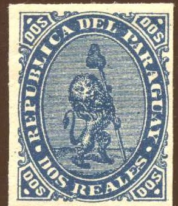
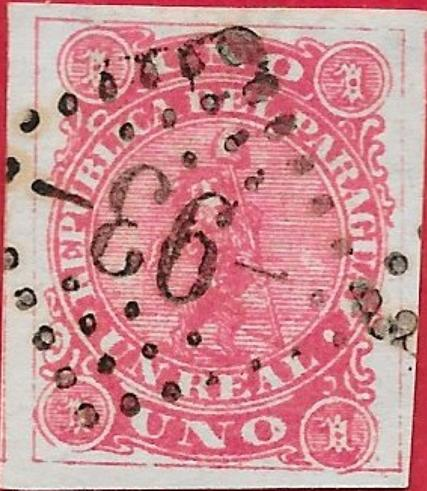
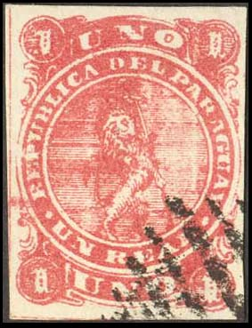
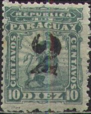
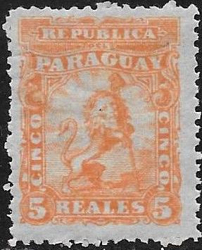
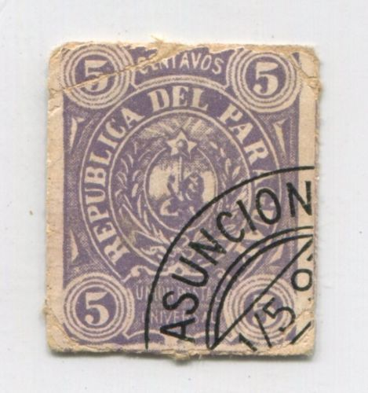
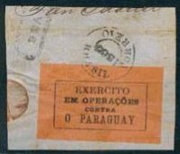

Return To Catalogue - Paraguay, bogus issues
Note: on my website many of the
pictures can not be seen! They are of course present in the
catalogue;
contact me if you want to purchase it:
For Paraguay, bogus issues, click here.
1 Rl red 2 Rs blue 3 Rs black
Value of the stamps |
|||
vc = very common c = common * = not so common ** = uncommon |
*** = very uncommon R = rare RR = very rare RRR = extremely rare |
||
| Value | Unused | Used | Remarks |
| 1 Rl | ** | *** | |
| 2 Rs | R | RR | |
| 3 Rs | RR | RR | |
Surcharged


'1' on 1 Rl red (1884) '5' (black or blue) on 1 Rl red (1878) '5' (black or blue) on 2 Rs blue (1878) '5' (black or blue) on 3 Rs black (1878)
Value of the stamps |
|||
vc = very common c = common * = not so common ** = uncommon |
*** = very uncommon R = rare RR = very rare RRR = extremely rare |
||
| Value | Unused | Used | Remarks |
| '1' on 1 Rl | *** | *** | |
| '5' on 1 Rl | RR | RR | Surcharge in black or blue (both RR) |
| '5' on 2 Rs | RR | RR | Two types of '5', first type only in black, second type in black or blue |
| '5' on 3 Rs | RR | RR | Two types of '5', both types exist in black or blue |
A reprint of the 2 Rs exists on thicker paper in more intense blue (value: *). Reprints also exist of the '5 on 1 Rl, '5' on 2 Rs and '5' on 3 Rs, I've been told that the vertical line at the top of the '5' is missing in these reprints.
I've been told that the next stamps are reprints (private reprints made by Lange?):

(2 reales red and blue 'reprints'?)
I've also seen the values 2 r green (three shades), 2 r orange, 2 r yellow, 2 r brown, 2 r violet and 2 r dark blue (two shades):

Examples:


Forgery apparently printed on very thick paper (a similar forgery
is shown on http://www.numonesidentifier.com/country/17/). The
lines on the thigh of the lion are continuous (there is no break
as in the genuine stamps). The upper left corner "1" is
different at the left bottom side. There is a large white space
in the background lines just to the left of the "UA" of
"PARAGUAY" in the forgeries that I have seen.

Another forgery of the 1 r value with guidelines all around the
stamp and a "93" numeral cancel or a "F.54"
box cancel or other bogus cancels.
Forgeries with a very broad "N" in "UNO".
Rather deceptive forgery with "O" of "UNO"
narrower.
Two other forgeries, the right one has the "U" of
"UNO" too close to the "1" to the left of it.

Another forgery of the 2 R value.

Possibly Spiro forgeries.
Some primitive forgeries, possibly made by Oneglia?

Other forgery of the 2 r value, note the strange "S" in
the upper "DOS"s. The "A" and "DEL"
are too close together.


Even more primitive forgery of the 3 R value.

Another forgery type of the 3 r value.

And another forgery of the 3 r value.

And a forgery of the 2 r value.

2 R black on blue; also the "S"s in "DOS" are
different from a genuine stamp.
Forged surcharges:


Forged surcharges made by the forger Fournier, taken from a
'Fournier Album of Philatelic Forgeries', reduced sizes.
I know that the forger Sperati has made forgeries of the 3 r value. I've seen a 'proof' of such a forgery. Distinguishing characteristics can be found in the BPA book. Sperati seems to have used two different forged circular 'CORREOS DE LA ASUNCION' with a star in the center. Sorry, no image available yet.

1 c blue (1881) 2 c red (1881) 4 c brown (1881) 5 c orange 10 c green
Value of the stamps |
|||
vc = very common c = common * = not so common ** = uncommon |
*** = very uncommon R = rare RR = very rare RRR = extremely rare |
||
| Value | Unused | Used | Remarks |
| 1 c | * | * | |
| 2 c | c | * | |
| 4 c | c | c | |
| 5 c | ** | * | |
| 10 c | ** | ** | |
Surcharged (1881)

'1' on 10 c green '2' on 10 c green
Value of the stamps |
|||
vc = very common c = common * = not so common ** = uncommon |
*** = very uncommon R = rare RR = very rare RRR = extremely rare |
||
| Value | Unused | Used | Remarks |
| '1' on 10 c | *** | *** | |
| '2' on 10 c | *** | *** | |
A 5 reales orange and 10 Reales brown were prepared but not issued (the value should have been in centavos and therefore the stamps were refused by the government of Paraguay):

(Prepared stamps, but not issued)
Reprints also exist of the 5 c and 10 c. The original stamps are perforated 12 1/2. The reprints are perforated 11 1/2, 13 1/2 or imperforate. They are on yellowish paper, example of such a reprint:
(probably a reprint of the 10 c green; imperforate)
These reprints also exist with forged '1' and '2' surcharge, pretending to be the surcharged stamps of 1881!
I have also seen (private?) imperforate reprints or forgeries in many colours: 1 c black, 1 c blue, 1 c brown, 2 c black, 2 c brown, 2 c blue, 4 c black, 4 c brown and 5 c green:


Forged surcharges made by the forger Fournier, taken from a
'Fournier Album of Philatelic Forgeries', reduced sizes.
Forgeries of the '1' and '2' on 10 c surcharges were made by a certain Mr. Esteve Latour of Buenos Aires (Le Timbre Poste by Moens, 1882, No.236, page 77 and same journal No 238, page 95); although Mr. Latour himself vigorously denies any accusations.


1 c green 2 c red 5 c blue

5 c violet forgery. Cut from a souvenir card?


1 c green 2 c red 5 c blue 7 c brown 10 c lilac 15 c orange 20 c red 40 c grey (1892) 60 c yellow (1892) 80 c blue (1892) 1 P green (1892) Overprinted 'PROVISORIO' and surcharged (1895) '5' on 7 c brown Overprinted 'Provisorio' and surcharged '10 centavos' on 40 c grey (1898) '10 centavos' on 15 c orange (1899) Overprinted (1902) 'Habilitado en cinco 5 cent. 5' on 60 c yellow 'Habilitado en cinco 5 cent. 5' on 80 c blue Surcharged 20 c on 2 c red (1907)
I've seen a postcard in this design (5 c blue).
15 c red

(Reduced sizes)
1 Centavos grey 1 Centavo grey (1896) 2 c green 5 c violet 10 c blue 14 c brown 20 c red 30 c green 1 P blue (1902) Overprinted '1492 12 DE OCTOBRE 1892' in an ellipse 10 c blue Overprinted 'Habilitado' and text (1902) 1 c on 14 c brown 1 c on 1 P blue
(Reduced size)
'5 CENTAVOS' on 2 c brown '5 CENTAVOS' on 4 c orange
5 c on 30 c green 10 c on 50 c lilac
1 c green (1901) 2 c grey 2 c red (1901) 3 c brown 4 c blue (1901) 5 c green 5 c brown (1901) 5 c violet (1901) 8 c brown 10 c red 24 c blue 28 c orange (1901) 40 c blue (1901, 2 types, '40' different) Surcharged 'Habilitado en 20 centavos' on 24 c blue (1902) 'Habilitado en 5 cent.' on 8 c brown (1902) 'Habilitado en cinco 5 cent. 5' on 28 c orange (1902) 'Habilitado en 5 CENTAVOS' on 28 c orange (1907) 'Habilitado en 5 CENTAVOS' on 40 c blue
1 c grey 2 c green 5 c blue 10 c brown 20 c red 30 c blue 60 c violet

1 c green 2 c red 5 c blue 10 c violet 20 c green 30 c blue 60 c yellow (1906)
The overprint 'Gobierno provisorio Ago 1904' is a bogus issue.
10 c blue


1 c orange 1 c red 1 c blue 1 c green 2 c red (2 shades of red were issued) 2 c green 5 c blue 5 c yellow 10 c brown 10 c green 10 c violet 20 c lilac 20 c green 30 c blue 30 c lilac 30 c red 60 c brown 60 c red Surcharged


(With misplaced overprint)
'Habilitado en 5 CENTAVOS' on 2 c red (1907) 'Habilitado en 5 CENTAVOS' on 2 c green (1907) 'Habilitado en 5 CENTAVOS' on 1 c blue (1907) 'Habilitado en 5 CENTAVOS' on 2 c red (1907) 'Habilitado en 5 CENTAVOS' on 60 c brown (1907) 'Habilitado en 5 CENTAVOS' on 60 c red (1907) 20 c on 1 c blue (1907) 20 c on 2 c red (1907) 20 c on 30 c blue (1907) 20 c on 30 c lilac (1907) 'Habilitado en $0.50 centavos' on 60 c lilac (1927?) Overprinted '1908' and colour change

1 c green 5 c yellow 10 c brown 20 c orange 30 c orange 60 c lilac 1 P blue Overprinted '1909' and colour change 1 c blue 1 c red 5 c green 5 c orange 10 c red 10 c brown 20 c yellow 20 c lilac 30 c brown 30 c blue

Rather blur forgery.
1 P red and black 1 P orange and black 1 P grey and black 1 P blue and black 2 P blue and black 2 P orange and black 2 P red and black 5 P red and black 5 P blue and black 5 P green and black 10 P brown and black 10 P orange and black 10 P blue and black 20 P green and black 20 P yellow and black 20 P lilac and black
1 c grey (also brown) 5 c violet 5 c green (1920) 5 c blue (1920) 10 c green 10 c violet (1920) 10 c red (1920) 20 c red 50 c red 75 c blue Surcharged
'Habilitada en VEINTE' (20 c) on 50 c (1912) '50' on 75 c blue (1920) 'Habilitado en 1 centavo' on 5 c blue (1926) 'Habilitado en $0:02 centavos' on 5 c blue (1926)
1 c olive and black 2 c blue and black 5 c red and blue 10 c blue and brown 20 c olive and blue 50 c violet and blue 75 c olive and brown

1 c grey 2 c orange 5 c lilac 10 c green 20 c red 40 c red 75 c blue 80 c yellow 1 P blue 1 P 25 c blue 3 P blue Surcharged
30 c on 40 c red (1919) '50' (two types, with or without lines) on 75 c blue (1920) 50 c (Habilitado, 1924) on 75 c blue 'HABILITADO en 0.50 1920' on 80 c yellow (1920) 1 P (Habilitado, 1924, 2 types) on 1 P 25 c blue 'HABILITADO en 1.75 1920' on 3 P blue (1920) 'Habilitado en 7 centavos' on 40 c red (1926) 'Habilitado en 15 centavos' on 75 c blue (1926)
(sorry, not yet implemented)
Examples:

I've been told that these are forged 'OFICIAL' overprints, I have
no further information.

Examples:
I have seen the values: 2 c brown and green, 2 c red and green, 4 c yellow and green, 40 c red and green, 1 P black and green, 2 P red and green, 10 P blue and green and the surcharges '5' on 30 c green and light green and '10' on (?) violet and green.
Cut from a postcard (around 1900):

Labels with inscription 'EXERCITO EM OPERACOES CONTRA O PARAGUAY' were issued by Brazil during the war against Paraguay in 1865. Non of these labels were actually used for postal purposes. I have seen the colours: black on red, black on lilac, black on yellow, black on violet and black on blue.
Forgeries also exist (by the way, I'm not 100 % sure that the above stamp is genuine):
(Entirely forged letter)
From 1922 onwards several stamps were overprinted with a 'c' (see example above). The 'c' stands for 'Campana', which means that the stamps were used outside the capital (where there existed a special discount indicated by this 'c').


{kind=link}
{kind=link}
{kind=link}
{kind=link}
{kind=link}
{kind=link}